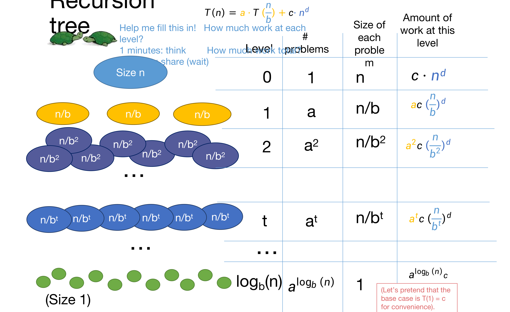
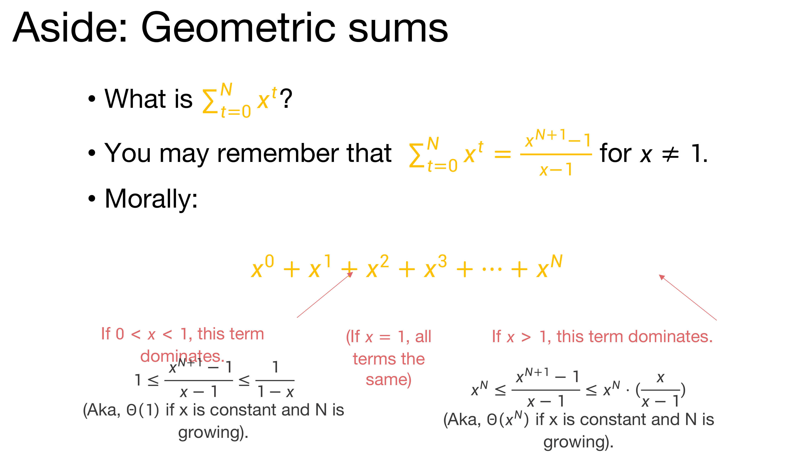
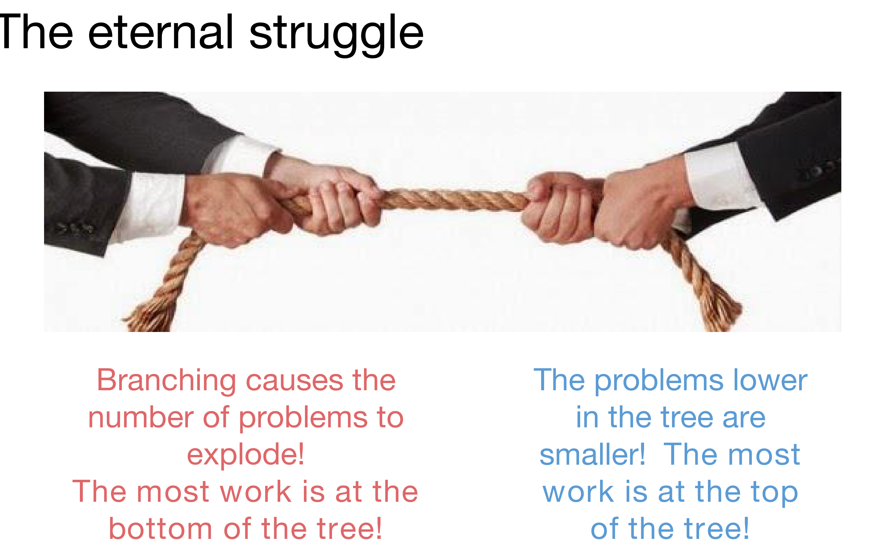
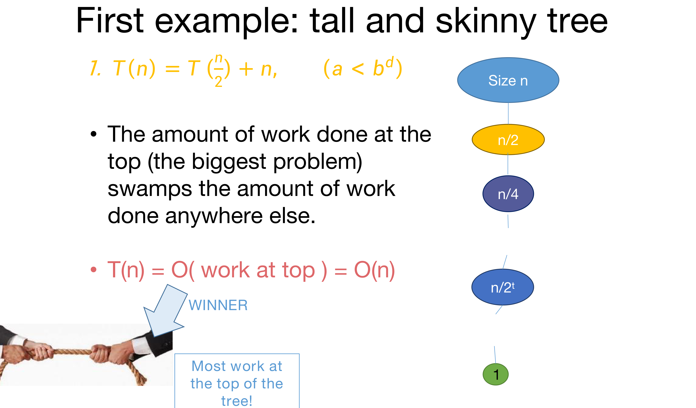
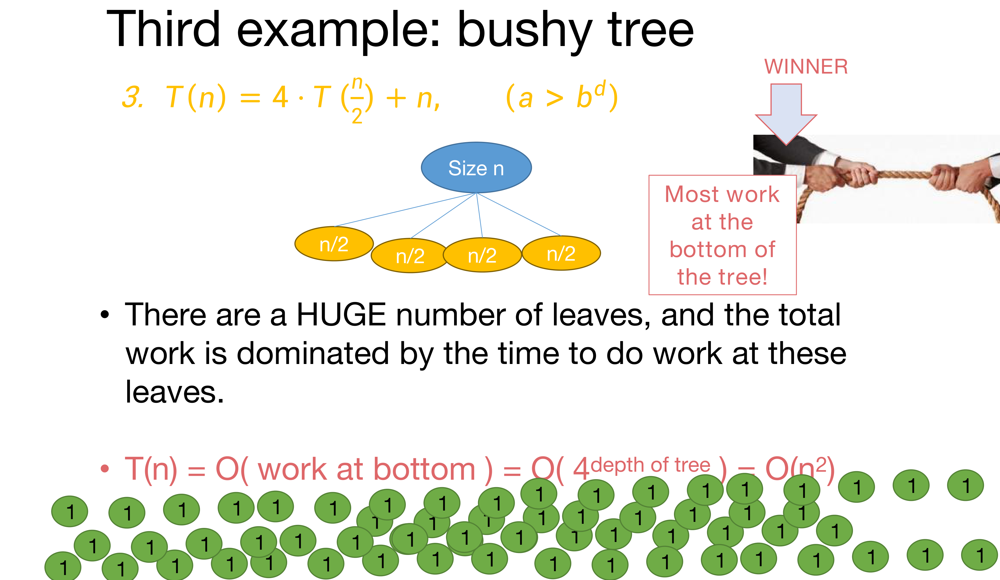
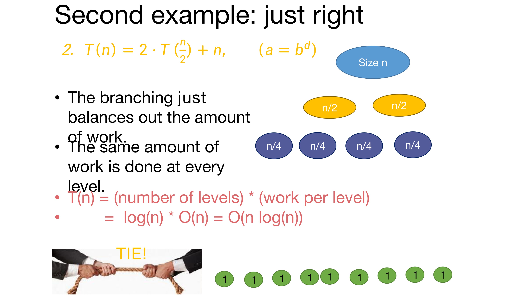

본 포스트는 서울대학교 Chenglin Fan 교수님의 4190.407 Algorithms (Design and Analysis of Algorithms) 강의 자료(3강 Recurrence relations and how to solve them!, 총 44장)를 바탕으로, 강의를 처음 듣는 독자도 논리적 흐름을 따라갈 수 있도록 재구성한 것입니다. 1강 표지에 명시되어 있듯 이 시리즈의 슬라이드는 상당 부분 Stanford의 Mary Wootters 교수님 자료에서 가져온 것이며, 본문의 대섹션 구분은 강의 서두의 Today 슬라이드가 제시한 목차(Recurrence Relations → The Master Theorem → The Substitution Method)를 그대로 따랐습니다.
한 줄 요약 (TL;DR)
“재귀 트리의 레벨별 작업량은 공비 \(a/b^d\)인 등비급수를 이루고, 그 공비가 \(1\)보다 큰지 작은지 같은지가 실행 시간의 세 가지 얼굴을 결정합니다.”
2강은 MergeSort의 실행 시간을 재귀 트리를 손으로 그려 \(O(n\log n)\)으로 계산했습니다. 3강은 그 계산을 매번 처음부터 다시 하지 않아도 되도록 공식으로 굳히는 회차입니다. 먼저 \(T(n) = a \cdot T(n/b) + O(n^d)\) 형태의 재귀 관계식(recurrence relation)을 정의하고, 이를 일반화된 재귀 트리로 펼쳐 총 작업량이 \(c \cdot n^d \sum_t (a/b^d)^t\)라는 등비급수임을 보입니다. 공비 \(a/b^d\)와 \(1\)의 대소에 따라 급수를 지배하는 항이 달라지고, 거기서 마스터 정리(Master Theorem)의 세 경우가 곧바로 따라옵니다. 이어서 마스터 정리가 통하지 않는 상황을 대비해, 답을 추측하고(Step 1) 귀납법으로 증명하는(Step 2) 더 일반적인 치환법(substitution method)을 두 개의 예제로 익힙니다.
1. 재귀 관계식 (Recurrence Relations)
1.1 지난 시간 (Last time….)
2강에서 다룬 내용을 먼저 되짚어 보겠습니다.
- 정렬(Sorting): InsertionSort와 MergeSort
- “동작한다”와 “빠르다”는 무슨 뜻인가?
- 최악의 경우 분석(Worst-Case Analysis)
- Big-Oh 표기법(Big-Oh Notation)
- 반복 · 재귀 알고리즘의 정확성 분석
- 수학적 귀납법(Induction)!
- 재귀 알고리즘의 실행 시간 분석
- 트리를 그려 놓고, 거기서 일어나는 모든 작업을 더한다.
마지막 항목이 이번 강의의 출발점입니다. 2강에서는 MergeSort 하나에 대해 재귀 트리를 직접 그려 총합을 냈는데, 3강은 그 절차를 임의의 분할 정복 알고리즘에 대해 한 번만 해 두고 공식으로 재사용하려 합니다.
1.2 오늘의 계획 (Today)
이번 강의는 다음 세 덩어리로 진행됩니다.
- 재귀 관계식(Recurrence Relations) — 재귀 알고리즘의 실행 시간을 어떻게 계산하는가?
- 마스터 정리(The Master Theorem) — 매번 처음부터 답할 필요가 없도록 만들어 주는 유용한 정리.
- 치환법(The Substitution Method) — 재귀 관계식을 푸는 또 다른 방법으로, 마스터 정리보다 더 일반적으로 적용됩니다.
1.3 MergeSort의 실행 시간 (Running time of MergeSort)
출발점은 이미 손에 쥐고 있는 예입니다. \(T(n)\)을 길이 \(n\)인 배열에 대한 MergeSort의 실행 시간이라고 합시다.
- 2강에서 \(T(n) = O(n\log n)\)임을 이미 알고 있습니다.
- 그리고 \(T(n)\)이 다음을 만족한다는 것도 압니다.
\[T(n) = 2 \cdot T\!\left(\frac{n}{2}\right) + O(n)\]
이 식은 아래 의사코드를 그대로 옮긴 것입니다. 재귀 호출이 두 번(MERGESORT(A[:n/2]), MERGESORT(A[n/2:])) 일어나고 각각의 입력 크기가 절반이므로 \(2 \cdot T(n/2)\)가, 마지막 줄의 MERGE가 \(O(n)\)이므로 뒤의 항이 나옵니다.
MERGESORT(A):
n = length(A)
if n <= 1:
return A # 길이 1 이하면 이미 정렬되어 있음
L = MERGESORT(A[:n/2]) # 앞 절반을 재귀적으로 정렬
R = MERGESORT(A[n/2:]) # 뒤 절반을 재귀적으로 정렬
return MERGE(L, R) # 두 절반을 병합 — 여기가 O(n)강의는 여기서 \(O(n)\)을 구체적인 상수로 고정합니다. 2강에서 크기 \(n\)인 문제에 대한 MERGE의 비용이 \(O(n)\)임을 보였는데, 논의를 구체적으로 만들기 위해 많아야 \(11n\)번의 연산이라고 두는 것입니다.
\[T(n) \le 2 \cdot T\!\left(\frac{n}{2}\right) + 11 \cdot n\]
1.4 재귀 관계식이란 무엇인가
\[T(n) = 2 \cdot T\!\left(\frac{n}{2}\right) + 11 \cdot n\]
같은 식을 재귀 관계식이라고 부릅니다. \(T(n)\)을 \(T(\text{$n$보다 작은 값})\)으로 표현하는 공식을 준다는 것이 핵심입니다.
- 등호(\(=\))로 쓴 재귀 관계식은 함수를 정확히 정의합니다.
- 부등호(\(\le\))로 쓴 재귀 관계식은 함수를 위에서 묶어 줄 뿐입니다. 앞 절의 \(T(n) \le 2T(n/2) + 11n\)도 엄연히 재귀 관계식이며, 다만 \(T\)를 특정하지 않고 상한만 제공합니다.
그리고 이번 강의가 풀려는 문제는 다음 한 문장입니다.
주어진 \(T(n)\)의 재귀 관계식으로부터, \(T(n)\)의 닫힌 형태(closed form) 표현을 찾아라.
MergeSort의 경우 우리가 원하는 답은 이미 알고 있는 \(T(n) = O(n\log n)\)입니다. 문제는 이 답을 재귀 관계식만 보고 기계적으로 얻어 내는 절차가 아직 없다는 것입니다.
1.5 기술적 세부사항 I: 기저 사례 (Technicalities I: Base Cases)
형식적으로 말하면, 재귀 관계식에는 항상 기저 사례(base case)가 함께 있어야 합니다. 다음 두 식을 비교해 보겠습니다.
\[T(n) = 2T\!\left(\frac{n}{2}\right) + 11n, \quad T(1) = 1\]
\[T(n) = 2T\!\left(\frac{n}{2}\right) + 11n, \quad T(1) = 1{,}000{,}000{,}000\]
두 식은 재귀 부분이 완전히 같지만 서로 다른 함수를 정의합니다. 기저 사례의 값이 재귀를 타고 위로 증폭되어 올라오기 때문입니다.
\(T\)가 무엇이든 \(T(1) = O(1)\)입니다. 크기 1짜리 문제를 처리하는 비용은 \(n\)에 의존하지 않는 어떤 상수이고, Big-Oh는 상수배와 상수항을 흡수하므로 점근적 결론이 달라지지 않습니다. 그래서 앞으로는 기저 사례를 종종 생략하고 씁니다.
원본 슬라이드는 여기에 “\(T(1) = O(1)\)인 이유를 직접 설명해 보라”는 질문을 남겨 둡니다. 다만 이것은 “생략해도 된다”는 뜻이지 “기저 사례가 값에 영향을 주지 않는다”는 뜻이 아니라는 점에 주의해야 합니다. 위 두 함수는 실제로 다른 함수이며, 상수 계수를 정확히 따져야 하는 상황에서는 기저 사례를 반드시 명시해야 합니다.
2. 마스터 정리 (The Master Theorem)
2.1 마스터 정리란
- 많은 재귀 관계식에 한꺼번에 적용되는 공식입니다.
- 다만 만능은 아닙니다. 다음 강의에서 이 정리가 통하지 않는 예를 보게 됩니다.
- 증명 방법: 2강에서 MergeSort에 썼던 재귀 트리 방법을 일반화(generalized tree method)한 것입니다.
슬라이드는 요다(Yoda)의 말투를 빌려 이 강의의 태도를 요약합니다 — “유용한 공식이다. 왜 통하는지도 알아야 한다.” 공식 자체보다 그 뒤의 계산이 본체라는 뜻입니다.
2.2 정리의 진술
\(a \ge 1\), \(b > 1\), 그리고 \(d\)가 (\(n\)에 의존하지 않는) 상수라고 하겠습니다. 그리고 \(T(n)\)이 다음을 만족한다고 합시다.
\[T(n) = a \cdot T\!\left(\frac{n}{b}\right) + O(n^d)\]
그러면
\[ T(n) = \begin{cases} O\!\left(n^d \log n\right) & \text{if } a = b^d \\[4pt] O\!\left(n^d\right) & \text{if } a < b^d \\[4pt] O\!\left(n^{\log_b a}\right) & \text{if } a > b^d \end{cases} \]
입니다.
기호가 많아 보이지만 세 개의 매개변수는 각각 분할 정복의 세 국면에 하나씩 대응합니다.
| 매개변수 | 의미 |
|---|---|
| \(a\) | 하위 문제의 개수 (number of subproblems) |
| \(b\) | 입력 크기가 줄어드는 비율 (factor by which input size shrinks) |
| \(d\) | 모든 하위 문제를 만들고, 그 해들을 합치는 데 \(n^d\)만큼의 작업이 필요함 |
원본 슬라이드는 여기에 두 개의 단서를 붙입니다.
- \(n/b\)를 \(\lfloor n/b \rfloor\)로 읽든 \(\lceil n/b \rceil\)로 읽든 정리는 여전히 성립합니다. (바로 다음 절의 주제입니다.)
- 여기서는 \(O\) 버전만 진술했지만, \(\Omega\)와 \(\Theta\) 버전도 강의 후에 확인해 볼 것을 권합니다.
2.3 기술적 세부사항 II: 정수 나눗셈 (Technicalities II: Integer division)
\(n\)이 홀수면 애초에 크기 \(n/2\)인 두 개의 문제로 쪼갤 수가 없습니다. 정직하게 쓰면 다음과 같습니다.
\[T(n) = T\!\left(\left\lfloor \frac{n}{2} \right\rfloor\right) + T\!\left(\left\lceil \frac{n}{2} \right\rceil\right) + O(n)\]
CLRS Section 4.6.2에 자세히 나와 있듯, 위 식을 아래처럼 바닥 · 천장 없이 쓴 것으로 간주해도 마스터 정리는 문제없이 작동함을 보일 수 있습니다.
\[T(n) = 2 \cdot T\!\left(\frac{n}{2}\right) + O(n)\]
그래서 앞으로는 재귀 관계식에서 바닥 함수와 천장 함수를 대체로 무시하겠습니다. 편의상 눈감는 것이 아니라 눈감아도 된다는 사실이 증명되어 있어서 무시하는 것이라는 점이 중요합니다.
2.4 예시들 (Examples)
정리를 적용하는 연습입니다. 지금까지 이 수업에서 만난 재귀 관계식들을 \((a, b, d)\)로 읽어 보면 다음과 같습니다.
| 알고리즘 | 재귀 관계식 | \(a\) | \(b\) | \(d\) | 비교 | 마스터 정리의 결론 |
|---|---|---|---|---|---|---|
| 불필요하게 재귀적인 정수 곱셈 | \(T(n) = 4T(n/2) + O(n)\) | \(4\) | \(2\) | \(1\) | \(a > b^d\) | \(T(n) = O(n^2)\) |
| 카라추바 정수 곱셈 | \(T(n) = 3T(n/2) + O(n)\) | \(3\) | \(2\) | \(1\) | \(a > b^d\) | \(T(n) = O\!\left(n^{\log_2 3}\right) \approx O(n^{1.6})\) |
| MergeSort | \(T(n) = 2T(n/2) + O(n)\) | \(2\) | \(2\) | \(1\) | \(a = b^d\) | \(T(n) = O(n\log n)\) |
| 그 나머지 하나 (That other one) | \(T(n) = T(n/2) + O(n)\) | \(1\) | \(2\) | \(1\) | \(a < b^d\) | \(T(n) = O(n)\) |
네 줄 모두 1~2강에서 직접 손으로 계산했던 결과와 정확히 일치합니다. 즉 마스터 정리는 새로운 사실을 알려 주는 것이 아니라, 이미 할 수 있던 계산을 세 개의 숫자만 읽어 끝내도록 압축해 줍니다. 특히 위 세 번째 줄은 \(b^d = 2^1 = 2 = a\)이므로 \(a = b^d\) 경우이고, 여기서 나오는 \(O(n^d \log n) = O(n\log n)\)이 바로 2강의 결론입니다.
2.5 마스터 정리의 증명 (Proof of the master theorem)
증명은 2강에서 MergeSort에 대해 했던 재귀 트리 작업을 그대로 하되, 조금 더 조심스럽게 하는 것입니다. 다음을 가정합니다.
\[T(n) \le a \cdot T\!\left(\frac{n}{b}\right) + c \cdot n^d\]
여기서 슬라이드는 스스로에게 이의를 제기합니다 — “잠깐, 마스터 정리의 가설은 각 레벨의 추가 작업이 \(O(n^d)\)라는 것이었는데, 지금은 \(cn^d\)라고 쓰고 있지 않은가?”
그리고 이렇게 답합니다. 맞는 지적이며, 가설은 어디까지나 \(T(n) = a \cdot T(n/b) + O(n^d)\)입니다. 오늘은 단순함을 위해 Big-Oh 정의에서 \(n_0 = 1\)이라고 사실상 가정하고 있습니다. 그 가정이 왜 일반성을 잃지 않는지(without loss of generality) 확인해 보는 것은 좋은 연습 문제로 남습니다.
2.5.1 재귀 트리 (Recursion tree)

표를 글로 옮기면 다음과 같습니다.
| 레벨 | 문제 개수 | 문제 하나의 크기 | 그 레벨의 작업량 |
|---|---|---|---|
| \(0\) | \(1\) | \(n\) | \(c \cdot n^d\) |
| \(1\) | \(a\) | \(n/b\) | \(a\,c\left(\dfrac{n}{b}\right)^{d}\) |
| \(2\) | \(a^2\) | \(n/b^2\) | \(a^2 c\left(\dfrac{n}{b^2}\right)^{d}\) |
| \(\vdots\) | \(\vdots\) | \(\vdots\) | \(\vdots\) |
| \(t\) | \(a^t\) | \(n/b^t\) | \(a^t c\left(\dfrac{n}{b^t}\right)^{d}\) |
| \(\vdots\) | \(\vdots\) | \(\vdots\) | \(\vdots\) |
| \(\log_b n\) | \(a^{\log_b n}\) | \(1\) | \(a^{\log_b n}\, c\) |
두 가지만 확인하면 표가 완성됩니다.
- 레벨 \(t\)의 문제 개수: 한 문제가 \(a\)개로 갈라지므로 \(a^t\)입니다.
- 레벨 \(t\)의 문제 크기: 한 단계마다 \(b\)로 나뉘므로 \(n/b^t\)입니다. 이 크기가 \(1\)이 되는 지점, 즉 \(n/b^t = 1 \iff t = \log_b n\)이 트리의 마지막 레벨입니다.
2.5.2 총 작업량
이제 모든 레벨의 작업량을 더하기만 하면 됩니다.
\[ \begin{aligned} T(n) \;&\le\; \sum_{t=0}^{\log_b n} \underbrace{a^t}_{\text{문제 개수}} \cdot \underbrace{c \left(\frac{n}{b^t}\right)^{d}}_{\text{문제 하나당 비용}} \\ &=\; c \cdot n^d \sum_{t=0}^{\log_b n} \frac{a^t}{b^{td}} \\ &=\; c \cdot n^d \sum_{t=0}^{\log_b n} \left(\frac{a}{b^d}\right)^{t} \end{aligned} \]
이 한 줄이 마스터 정리 증명의 전부입니다. 총 작업량은 공비 \(\dfrac{a}{b^d}\)인 등비급수이고, 남은 일은 공비가 \(1\)보다 큰지, 작은지, 같은지에 따라 이 급수를 평가하는 것뿐입니다. 마스터 정리의 조건이 하필 \(a\)와 \(b^d\)의 대소 비교인 이유가 여기서 드러납니다.
2.6 세 경우를 모두 확인하기 (Now let’s check all the cases)
2.6.1 Case 1: \(a = b^d\)
이때 공비 \(\dfrac{a}{b^d}\)는 정확히 \(1\)입니다. 따라서 급수의 모든 항이 \(1\)이 되고, 남는 것은 항의 개수뿐입니다.
\[ \begin{aligned} T(n) \;&=\; c \cdot n^d \sum_{t=0}^{\log_b n} \left(\underbrace{\frac{a}{b^d}}_{=\,1}\right)^{t} \\ &=\; c \cdot n^d \sum_{t=0}^{\log_b n} 1 \\ &=\; c \cdot n^d \left(\log_b (n) + 1\right) && \text{(항이 } \log_b n + 1 \text{개)} \\ &=\; c \cdot n^d \left(\frac{\log (n)}{\log (b)} + 1\right) && \text{(밑 변환 공식)} \\ &=\; \Theta\!\left(n^d \log n\right) && (b \text{는 상수}) \end{aligned} \]
마지막 줄에서 \(1/\log(b)\)는 \(n\)에 의존하지 않는 상수이므로 점근 표기 안으로 흡수됩니다. 이것이 마스터 정리 첫 번째 경우의 \(O(n^d\log n)\)입니다.
2.6.2 Case 2: \(a < b^d\)
이때 공비는 \(1\)보다 작습니다.
\[T(n) \;=\; c \cdot n^d \sum_{t=0}^{\log_b n} \left(\underbrace{\frac{a}{b^d}}_{<\,1}\right)^{t}\]
공비가 \(1\)보다 작은 등비급수는 항이 아무리 많아져도 발산하지 않고 어떤 상수로 수렴합니다. 이 사실을 정확히 쓰기 위해 잠시 등비급수를 정리하고 가겠습니다.
2.6.3 곁가지: 등비급수 (Aside: Geometric sums)

정리하면 이렇습니다.
- 닫힌 형태: \(x \ne 1\)에 대하여 \[\sum_{t=0}^{N} x^t = \frac{x^{N+1} - 1}{x - 1}\]
- 직관적으로(Morally): \(x^0 + x^1 + x^2 + \cdots + x^N\)에서 어느 항이 나머지를 압도하는가가 전부입니다.
| 공비 \(x\) | 지배하는 항 | 급수의 크기 |
|---|---|---|
| \(0 < x < 1\) | 첫 항 \(x^0 = 1\) | \(1 \le \dfrac{x^{N+1}-1}{x-1} \le \dfrac{1}{1-x}\), 즉 \(\Theta(1)\) |
| \(x = 1\) | 모든 항이 동일 | 항의 개수, 즉 \(N+1\) |
| \(x > 1\) | 마지막 항 \(x^N\) | \(x^N \le \dfrac{x^{N+1}-1}{x-1} \le x^N \cdot \dfrac{x}{x-1}\), 즉 \(\Theta(x^N)\) |
두 부등식의 상한이 각각 \(\frac{1}{1-x}\)와 \(\frac{x}{x-1}\)인 것에 주목할 필요가 있습니다. \(x\)가 상수인 한 이들도 상수이므로, 점근적으로는 각각 \(\Theta(1)\)과 \(\Theta(x^N)\)으로 깔끔하게 정리됩니다.
2.6.4 Case 2 마무리: \(a < b^d\)
이제 위 표의 첫 줄을 \(x = a/b^d < 1\), \(N = \log_b n\)에 적용하면 됩니다.
\[ \begin{aligned} T(n) \;&=\; c \cdot n^d \sum_{t=0}^{\log_b n} \left(\underbrace{\frac{a}{b^d}}_{<\,1}\right)^{t} \\ &=\; c \cdot n^d \cdot [\text{어떤 상수}] \\ &=\; \Theta\!\left(n^d\right) \end{aligned} \]
레벨이 몇 개든 상관없이 급수가 상수로 묶이므로, 트리 전체의 비용이 맨 위 레벨의 비용 \(c\,n^d\)와 같은 차수가 됩니다.
2.6.5 Case 3: \(a > b^d\)
이번에는 공비가 \(1\)보다 큽니다. 등비급수 표의 마지막 줄을 적용하면 마지막 항이 급수를 지배합니다.
\[ \begin{aligned} T(n) \;&=\; c \cdot n^d \sum_{t=0}^{\log_b n} \left(\underbrace{\frac{a}{b^d}}_{>\,1}\right)^{t} \\ &=\; \Theta\!\left(n^d \left(\frac{a}{b^d}\right)^{\log_b n}\right) \\ &=\; \Theta\!\left(n^{\log_b a}\right) \end{aligned} \]
마지막 등호는 슬라이드가 “칠판에서 하겠다”, “이 단계가 정당한지 스스로 납득해 보라”고 남겨 둔 부분입니다. 로그 지수 항등식 하나면 끝나므로 여기서 채워 두겠습니다.
- 먼저 \(a^{\log_b n} = n^{\log_b a}\)입니다. 양변에 \(\log_b\)를 취하면 좌변은 \(\log_b(n) \cdot \log_b(a)\), 우변은 \(\log_b(a) \cdot \log_b(n)\)으로 같기 때문입니다.
- 또한 \(b^{\,d \log_b n} = \left(b^{\log_b n}\right)^{d} = n^d\)입니다.
- 따라서 \[\left(\frac{a}{b^d}\right)^{\log_b n} = \frac{a^{\log_b n}}{b^{\,d\log_b n}} = \frac{n^{\log_b a}}{n^d}\]
- 이를 대입하면 \[n^d \cdot \left(\frac{a}{b^d}\right)^{\log_b n} = n^d \cdot \frac{n^{\log_b a}}{n^d} = n^{\log_b a}\]
이것이 세 번째 경우의 \(O\!\left(n^{\log_b a}\right)\)입니다. 참고로 \(n^{\log_b a} = a^{\log_b n}\)은 트리의 잎(leaf) 개수 그 자체입니다. 즉 이 경우의 실행 시간은 잎의 개수에 비례합니다.
2.6.6 세 경우 확인 완료
\[ T(n) = \begin{cases} O\!\left(n^d \log n\right) & \text{if } a = b^d \\[4pt] O\!\left(n^d\right) & \text{if } a < b^d \\[4pt] O\!\left(n^{\log_b a}\right) & \text{if } a > b^d \end{cases} \]
세 경우가 모두 확인되었으므로 마스터 정리의 증명이 끝났습니다. 증명 전체가 “재귀 트리를 그린다 → 레벨별 작업량을 더한다 → 등비급수를 공비에 따라 평가한다” 세 걸음으로 이루어져 있다는 점을 기억해 두면 좋습니다.
2.7 더 일반적인 형태 (\(T(n) = aT(n/b) + f(n)\))
원본 슬라이드에는 “SLIDE SKIPPED IN CLASS”라고 표시되어 있는, CLRS에서 가져온 더 일반적인 버전이 실려 있습니다. 추가 작업량이 \(n^d\) 꼴의 다항식이 아니라 임의의 함수 \(f(n)\)인 경우를 다룹니다.
\(T(n) = a \cdot T\!\left(\frac{n}{b}\right) + f(n)\)이 \(a \ge 1\), \(b > 1\)인 재귀 관계식이라고 하면,
- 어떤 상수 \(\epsilon > 0\)에 대해 \(f(n) = O\!\left(n^{\log_b a - \epsilon}\right)\)이면, \(T(n) = \Theta\!\left(n^{\log_b a}\right)\)입니다.
- \(f(n) = \Theta\!\left(n^{\log_b a}\right)\)이면, \(T(n) = \Theta\!\left(n^{\log_b a}\log n\right)\)입니다.
- 어떤 상수 \(\epsilon > 0\)에 대해 \(f(n) = \Omega\!\left(n^{\log_b a + \epsilon}\right)\)이고, 충분히 큰 모든 \(n\)과 어떤 \(c < 1\)에 대해 \(a\,f(n/b) \le c\,f(n)\)이면, \(T(n) = \Theta(f(n))\)입니다.
슬라이드는 “우리가 한 증명을 어떻게 고치면 이 일반형을 증명할 수 있을지 궁리해 보라”는 과제를 남기면서, 동시에 “이 수업에서는 이 정교한 버전을 알 필요는 없다”고 못박아 둡니다. 세 조건이 각각 §2.6의 세 경우와 같은 자리에 놓여 있음을 눈으로 확인해 두면 충분합니다.
2.8 마스터 정리 이해하기 (Understanding the Master Theorem)
공식을 얻었으니 이제 물을 차례입니다 — 이 세 경우는 대체 무슨 뜻인가?
2.8.1 영원한 줄다리기 (The eternal struggle)

재귀 트리에서는 아래로 내려갈수록 문제의 개수는 \(a\)배씩 늘고, 문제 하나의 비용은 \(b^d\)분의 1로 줄어듭니다. 두 변화가 정면으로 맞서고 있으므로, 승부는 오직 \(a\)와 \(b^d\)의 대소로 결정됩니다.
- \(a > b^d\): 개수가 이깁니다. 작업량이 트리 아래쪽(잎)에 쏠립니다.
- \(a < b^d\): 크기가 이깁니다. 작업량이 트리 위쪽(뿌리)에 쏠립니다.
- \(a = b^d\): 비깁니다. 모든 레벨의 작업량이 같습니다.
2.8.2 세 개의 워밍업 (Consider our three warm-ups)
이 직관을 확인하기 위해 다음 세 재귀 관계식을 봅니다. 셋 다 \(b = 2\), \(d = 1\)이고 오직 \(a\)만 다릅니다.
- \(T(n) = T\!\left(\dfrac{n}{2}\right) + n\) \((a = 1)\)
- \(T(n) = 2 \cdot T\!\left(\dfrac{n}{2}\right) + n\) \((a = 2)\)
- \(T(n) = 4 \cdot T\!\left(\dfrac{n}{2}\right) + n\) \((a = 4)\)
\(b^d = 2^1 = 2\)이므로 각각 \(a < b^d\), \(a = b^d\), \(a > b^d\)에 해당합니다. 원본 슬라이드는 양 극단을 먼저 보여 준 뒤 가운데를 마지막에 놓는 순서 — 1번 → 3번 → 2번 — 로 설명하며, 아래에서도 그 순서를 그대로 따르겠습니다.
2.8.3 첫 번째 예: 길고 마른 트리 (First example: tall and skinny tree)

- 재귀 호출이 한 번뿐이므로 트리의 각 레벨에는 노드가 하나씩만 있습니다.
- 맨 위(가장 큰 문제)에서 하는 작업량이 다른 어디에서 하는 작업량보다도 압도적으로 큽니다.
- 따라서 \(T(n) = O(\text{맨 위에서 하는 작업}) = O(n)\)입니다.
마스터 정리로 확인하면 \(a = 1 < 2 = b^d\)이므로 \(T(n) = O(n^d) = O(n)\)으로 일치합니다.
2.8.4 세 번째 예: 무성한 트리 (Third example: bushy tree)

- 한 문제가 네 개로 갈라지므로 트리가 옆으로 급격히 퍼집니다.
- 잎의 개수가 엄청나게 많고(a HUGE number of leaves), 총 작업량은 그 잎들에서 쓰는 시간에 의해 지배됩니다.
- 따라서 \(T(n) = O(\text{맨 아래에서 하는 작업}) = O\!\left(4^{\text{트리의 깊이}}\right) = O(n^2)\)입니다.
마스터 정리로 확인하면 \(a = 4 > 2 = b^d\)이므로 \(T(n) = O\!\left(n^{\log_b a}\right) = O\!\left(n^{\log_2 4}\right) = O(n^2)\)으로 일치합니다. §2.6.5에서 세 번째 경우의 답이 곧 잎의 개수라고 했던 것이 여기서 눈으로 확인됩니다.
2.8.5 두 번째 예: 딱 알맞은 (Second example: just right)

- 가지치기가 작업량의 감소를 정확히 상쇄합니다(The branching just balances out the amount of work).
- 그 결과 모든 레벨에서 같은 양의 작업이 이루어집니다.
- 따라서
\[T(n) = (\text{레벨의 개수}) \times (\text{레벨당 작업량}) = \log(n) \times O(n) = O(n\log n)\]
마스터 정리로 확인하면 \(a = 2 = b^d\)이므로 \(T(n) = O(n^d\log n) = O(n\log n)\)으로 일치합니다.
2.9 여기까지 배운 것 (What have we learned?)
- “마스터 방법(Master Method)”은 우리의 삶을 편하게 만들어 줍니다.
- 하지만 그것은 원한다면 처음부터 직접 할 수 있었던 계산을 공식으로 굳혀 놓은 것에 지나지 않습니다.
두 번째 문장이 §2.1의 요다 대사와 짝을 이룹니다. 마스터 정리를 외워서 쓰는 것과, 재귀 트리를 그려 등비급수를 평가할 줄 아는 것은 다릅니다. 후자를 할 수 있어야 정리가 통하지 않는 상황에서도 답을 낼 수 있습니다 — 그리고 그런 상황이 바로 다음 절의 주제입니다.
3. 치환법 (The Substitution Method)
3.1 치환법의 세 단계
재귀 관계식을 푸는 또 다른 방법이며, 마스터 방법보다 더 일반적입니다.
- Step 1: 정답에 대한 추측(guess)을 만들어 낸다.
- Step 2: 그 추측이 옳음을 증명한다.
- (Step 3: Profit.)
Step 1에는 정해진 절차가 없다는 점이 중요합니다. 원본 슬라이드의 표현을 그대로 옮기면 메타적 추론, 새가 알려 줬다, 희망적 사고 등 무엇이든 좋습니다. 다만 유용한 한 가지 방법이 있는데, 재귀를 “풀어헤쳐(unroll)” 보는 것입니다. 아래에서 실제로 그렇게 합니다.
3.2 첫 번째 예제 (first example)
다시 익숙한 식으로 돌아옵니다.
\[T(n) = 2 \cdot T\!\left(\frac{n}{2}\right) + n, \qquad T(0) = 0,\ T(1) = 1\]
- 마스터 방법은 \(T(n) = O(n\log n)\)이라고 말합니다.
- 이제 같은 결론을 치환법으로 증명해 보겠습니다.
3.3 Step 1: 답을 추측한다 (Guess the answer)
재귀를 한 겹씩 벗겨 냅니다. 전개(Expand) → 정리(Simplify)를 번갈아 반복하는 것이 전부입니다.
\[ \begin{aligned} T(n) &= 2 \cdot T\!\left(\frac{n}{2}\right) + n \\ T(n) &= 2 \cdot \left(2 \cdot T\!\left(\frac{n}{4}\right) + \frac{n}{2}\right) + n && \left(T\!\left(\tfrac{n}{2}\right) \text{를 전개}\right) \\ T(n) &= 4 \cdot T\!\left(\frac{n}{4}\right) + 2n && (\text{정리}) \\ T(n) &= 4 \cdot \left(2 \cdot T\!\left(\frac{n}{8}\right) + \frac{n}{4}\right) + 2n && \left(T\!\left(\tfrac{n}{4}\right) \text{를 전개}\right) \\ T(n) &= 8 \cdot T\!\left(\frac{n}{8}\right) + 3n && (\text{정리}) \\ &\;\;\vdots \end{aligned} \]
세 줄만 봐도 규칙이 보입니다. \(T\) 앞의 계수는 \(2^t\), 인자는 \(n/2^t\), 뒤에 붙는 항은 \(t \cdot n\)입니다.
\[\text{패턴 추측: } \quad T(n) = 2^t \cdot T\!\left(\frac{n}{2^t}\right) + t \cdot n\]
이제 재귀가 바닥에 닿는 지점, 즉 \(n/2^t = 1\)이 되는 \(t = \log(n)\)을 대입합니다.
\[T(n) = n \cdot T(1) + \log(n) \cdot n = n\left(\log(n) + 1\right)\]
(\(T(1) = 1\)을 사용했습니다.) 이것이 우리의 추측입니다. 아직 아무것도 증명하지 않았다는 점을 기억해 두어야 합니다 — 위 전개는 “\(\vdots\)”에서 패턴을 눈으로 읽었을 뿐이고, 그 패턴이 모든 \(t\)에 대해 성립한다는 보장은 없습니다.
3.4 Step 2: 추측이 옳음을 증명한다 (Prove the guess is correct)
보장을 만드는 것이 Step 2이고, 도구는 2강과 마찬가지로 수학적 귀납법입니다.
- 귀납 가설(Inductive Hypothesis): \(T(n) = n\left(\log(n) + 1\right)\)
- 기저 사례(Base Case, \(n = 1\)): \[T(1) = 1 = 1 \cdot \left(\log(1) + 1\right) \quad \checkmark\] (\(\log(1) = 0\)이므로 우변도 \(1\)입니다.)
- 귀납 단계(Inductive Step): \(1 \le n < k\)인 모든 \(n\)에 대해 귀납 가설이 성립한다고 가정합니다. 즉 모든 \(1 \le n < k\)에 대해 \(T(n) = n(\log(n)+1)\)이라고 둡니다. 이때 \(n = k\)에서도 성립함을 보입니다. \[ \begin{aligned} T(k) &= 2 \cdot T\!\left(\frac{k}{2}\right) + k && (\text{정의에 의해}) \\ &= 2 \cdot \left(\frac{k}{2}\left(\log\!\left(\frac{k}{2}\right) + 1\right)\right) + k && (\text{귀납 가설에 의해}) \\ &= k\left(\log(k) - 1 + 1\right) + k && \left(\log\!\left(\tfrac{k}{2}\right) = \log(k) - 1\right) \\ &= k\left(\log(k) + 1\right) && (\text{정리}) \end{aligned} \] 따라서 귀납 가설이 \(n = k\)에서도 성립합니다.
- 결론(Conclusion): 모든 \(n \ge 1\)에 대하여 \(T(n) = n\left(\log(n)+1\right)\)입니다.
여기서 \(n(\log(n)+1) = O(n\log n)\)이므로 원하던 결론을 얻습니다.
다만 이 증명에는 §2.3과 같은 느슨함이 남아 있습니다. \(k\)가 홀수이면 \(T(k/2)\)라는 표현 자체가 성립하지 않기 때문입니다. 원본 슬라이드도 “우리는 여기서 바닥과 천장에 대해 느슨하게(sloppy) 굴고 있다 — 덜 느슨하려면 무엇을 해야 할까?”라고 물으며 이 점을 명시합니다. 마스터 정리에 대해서는 이렇게 해도 결론이 바뀌지 않음이 CLRS에서 증명되어 있지만, 치환법에서 엄밀하게 하려면 \(\lfloor k/2 \rfloor\)와 \(\lceil k/2 \rceil\)을 각각 다루도록 귀납법을 손봐야 합니다.
3.5 Step 3: Profit
Step 1을 아예 하지 않은 척하고, 다음만 적으면 됩니다.
- 정리: \(T(n) = O(n\log n)\)
- 증명: [Step 2에서 쓴 것 그대로]
추측을 어떻게 얻었는지는 증명의 일부가 아닙니다. 전개해서 패턴을 읽었든, 마스터 정리로 답을 미리 알았든, 그냥 찍었든 상관없습니다. 검증되는 것은 오직 Step 2뿐이며, 이것이 치환법이 마스터 정리보다 넓게 적용되는 이유이기도 합니다 — 답을 얻는 경로가 자유롭기 때문입니다.
3.6 여기까지 배운 것 (What have we learned?)
- 치환법은 재귀 관계식을 푸는 또 다른 방법입니다.
- Step 1: 답을 추측한다. / Step 2: 추측이 옳음을 증명한다. / Step 3: Profit.
- 치환법은 다음 강의에서 더 연습하게 됩니다.
3.7 또 다른 예제 (Another example)
앞의 예제는 추측이 \(n(\log(n)+1)\)처럼 딱 떨어지는 등식이어서 운이 좋은 편이었습니다. 늘 그렇지는 않습니다. 다음 식을 봅시다. (원본 슬라이드는 이 예제를 “시간이 되면(if time)”으로 표시하고, 시간이 없으면 4강에서 같은 아이디어를 다시 보게 된다고 안내합니다.)
\[T(n) = 2 \cdot T\!\left(\frac{n}{2}\right) + 32 \cdot n, \qquad T(2) = 2\]
3.7.1 Step 1: 추측
- 추측: \(O(n\log n)\) — 슬라이드의 표현으로는 “신의 계시(divine inspiration)”입니다.
- 그런데 문제가 있습니다. \(O(n\log n)\)의 구체적인 형태, 즉 선행 상수(leading constant)가 얼마인지에 대해서는 정밀한 추측이 없습니다.
- 그래도 Step 2를 할 수 있을까요?
3.7.2 Step 2: 거꾸로 상수를 찾아내며 증명하기
할 수 있습니다. 상수를 미지수로 남겨 둔 채 증명을 진행하고, 증명이 요구하는 조건으로부터 상수를 역산하면 됩니다.
- 추측: 어떤 상수 \(C\)(값은 나중에 결정, TBD)에 대해 \(T(n) \le C \cdot n\log(n)\)
- 귀납 가설(\(n \ge 2\)에 대하여): \(T(n) \le C \cdot n \log(n)\)
- 기저 사례: \(T(2) = 2 \le C \cdot 2\log(2) = 2C\)이므로, \(C \ge 1\)이기만 하면 성립합니다.
- 귀납 단계: 아래에서 따로 봅니다.
3.7.3 귀납 단계 (Inductive step)
\(n < k\)에 대해 귀납 가설이 성립한다고 가정합니다.
\[ \begin{aligned} T(k) &= 2T\!\left(\frac{k}{2}\right) + 32k && (\text{정의에 의해}) \\ &\le 2C\frac{k}{2}\log\!\left(\frac{k}{2}\right) + 32k && (\text{귀납 가설에 의해}) \\ &= Ck\left(\log(k) - 1\right) + 32k && \left(\log\!\left(\tfrac{k}{2}\right) = \log(k)-1\right) \\ &= k\left(C\log(k) + 32 - C\right) && (\text{정리}) \\ &\le k\left(C\log(k)\right) && (\textbf{단, } C \ge 32 \textbf{인 한}) \end{aligned} \]
마지막 단계가 이 예제의 핵심입니다. \(32 - C \le 0\)이어야 부등호가 유지되고, 그 조건이 곧 \(C \ge 32\)입니다. 이 조건만 만족되면 귀납 가설이 \(n = k\)에서도 성립합니다.
3.7.4 상수 확정
증명의 두 지점이 각각 \(C\)에 조건을 걸었습니다.
| 증명의 지점 | \(C\)에 걸리는 조건 |
|---|---|
| 기저 사례 \(T(2) = 2 \le C \cdot 2\log(2)\) | \(C \ge 1\) |
| 귀납 단계 \(k(C\log k + 32 - C) \le k\,C\log k\) | \(C \ge 32\) |
두 조건을 모두 만족시키려면 \(C \ge 32\)면 충분하므로, \(C = 32\)로 택합니다.
\[\textbf{결론: } \quad T(n) \le 32 \cdot n\log(n)\]
3.7.5 Step 3: Profit.
증명.
- 귀납 가설: \(T(n) \le 32 \cdot n\log(n)\)
- 기저 사례: \(T(2) = 2 \le 32 \cdot 2\log(2) = 64\)이므로 참입니다.
- 귀납 단계: \(n < k\)에 대해 귀납 가설이 성립한다고 가정하면, \[ \begin{aligned} T(k) &= 2T\!\left(\frac{k}{2}\right) + 32k && (T(k) \text{의 정의에 의해}) \\ &\le 2 \cdot 32 \cdot \frac{k}{2}\log\!\left(\frac{k}{2}\right) + 32k && (\text{귀납법에 의해}) \\ &= k\left(32\log(k) + 32 - 32\right) \\ &= 32 \cdot k\log(k) \end{aligned} \] 이므로 \(n = k\)에 대한 귀납 가설이 확립됩니다.
- 결론: 모든 \(n \ge 2\)에 대하여 \(T(n) \le 32 \cdot n\log(n)\)입니다. Big-Oh의 정의에서 \(n_0 = 2\), \(c = 32\)로 두면 이는 곧 \(T(n) = O(n\log n)\)을 뜻합니다. \(\blacksquare\)
Step 1에서 상수를 몰랐다는 사실도, Step 2에서 \(C\)를 미지수로 끌고 다녔다는 사실도 최종 증명문에는 전혀 등장하지 않습니다. 완성된 증명에는 처음부터 \(32\)가 적혀 있을 뿐입니다. 이것이 §3.5의 “Step 1을 하지 않은 척하라”가 실제로 작동하는 모습입니다.
3.8 여기까지 배운 것 (What have we learned?)
- 치환법은 재귀 관계식을 푸는 또 다른 방법입니다.
- Step 1: 답을 추측한다. / Step 2: 추측이 옳음을 증명한다. / Step 3: Profit.
- 다음 강의에서 치환법을 더 연습하게 됩니다.
3.9 왜 두 가지 방법인가 (Why two methods?)
- 때때로 마스터 방법이 통하지 않는 곳에서 치환법이 통하기 때문입니다.
- 이에 대해서는 다음 시간에 더 다룹니다.
§2.1에서 예고했던 “마스터 정리가 통하지 않는 예”와 여기의 “치환법이 통하는 곳”은 같은 지점을 가리킵니다. 마스터 정리는 \(T(n) = a\,T(n/b) + O(n^d)\)라는 틀에 들어맞는 재귀 관계식에만 적용되는 반면, 치환법은 추측하고 귀납법으로 검증할 수만 있으면 형태를 가리지 않습니다.
4. 다음 시간 (Next Time)
- 하위 문제들의 크기가 서로 다르면 어떻게 될까요?
- 그리고 그런 일이 언제 벌어질까요?
마스터 정리는 \(a\)개의 하위 문제가 모두 정확히 \(n/b\) 크기임을 전제합니다. 이 전제가 깨지면 §2.5의 재귀 트리에서 “레벨 \(t\)의 문제 개수 \(\times\) 문제 하나의 크기”라는 곱셈이 성립하지 않고, 따라서 등비급수도 나오지 않습니다. 이것이 마스터 정리가 통하지 않는 지점이자 치환법이 필요해지는 지점입니다.
정리하며 (Closing Remarks)
이번 강의의 논증 사슬을 단계별로 압축하면 다음과 같습니다.
| 단계 | 내용 | 근거 |
|---|---|---|
| ① 문제 정의 | 재귀 알고리즘의 비용은 \(T(n)\)을 \(T(\text{더 작은 값})\)으로 쓴 식으로 표현된다 | 재귀 관계식의 정의 |
| ② 목표 설정 | 그 식으로부터 \(T(n)\)의 닫힌 형태를 찾는 것이 과제다 | \(T(n) = 2T(n/2)+11n \Rightarrow O(n\log n)\) |
| ③ 트리로 펼치기 | 레벨 \(t\)에는 \(a^t\)개의 문제가 있고 각각의 크기는 \(n/b^t\)이다 | 일반화된 재귀 트리 |
| ④ 급수로 환원 | 총 작업량 \(= c\,n^d \sum_{t=0}^{\log_b n} (a/b^d)^t\) — 공비 \(a/b^d\)인 등비급수 | 레벨별 작업량의 합 |
| ⑤ 공비로 분기 | 공비가 \(<1\)이면 첫 항이, \(=1\)이면 항의 개수가, \(>1\)이면 마지막 항이 지배한다 | 등비급수의 세 갈래 |
| ⑥ 마스터 정리 | \(a<b^d \Rightarrow O(n^d)\), \(a=b^d \Rightarrow O(n^d\log n)\), \(a>b^d \Rightarrow O(n^{\log_b a})\) | ④ + ⑤ |
| ⑦ 의미 부여 | \(a\)(개수 폭발)와 \(b^d\)(크기 감소)의 줄다리기에서 이긴 쪽이 트리의 위·아래 중 작업이 몰리는 곳을 정한다 | 길고 마른 트리 / 무성한 트리 / 균형 트리 |
| ⑧ 한계와 대안 | 틀에 맞지 않는 재귀 관계식은 추측 후 귀납법으로 검증한다 | 치환법 Step 1–2 |
| ⑨ 상수의 처리 | 선행 상수를 모르면 \(C\)로 두고, 기저 사례와 귀납 단계가 요구하는 조건에서 역산한다 | \(C \ge 1\)과 \(C \ge 32\) \(\Rightarrow\) \(C = 32\) |
| ⑩ 남은 문제 | 하위 문제들의 크기가 서로 다르면 ③의 곱셈이 깨진다 | 4강 예고 |